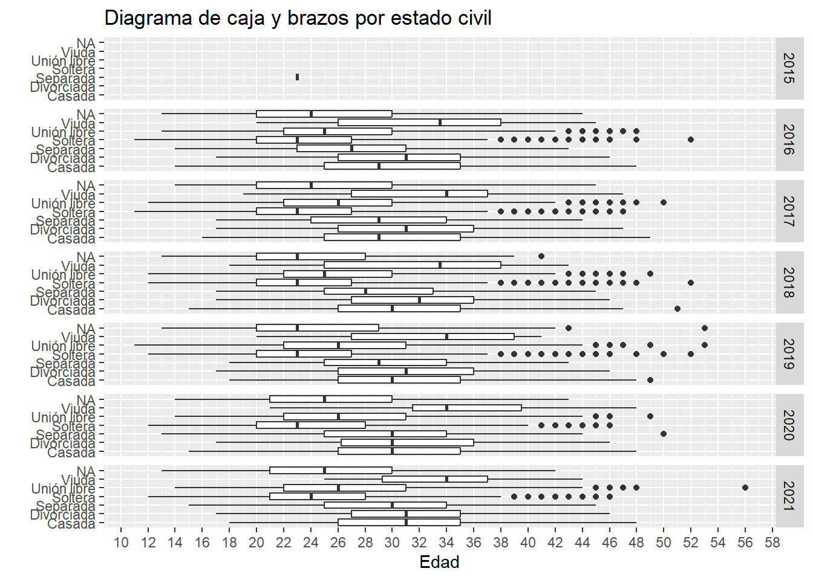
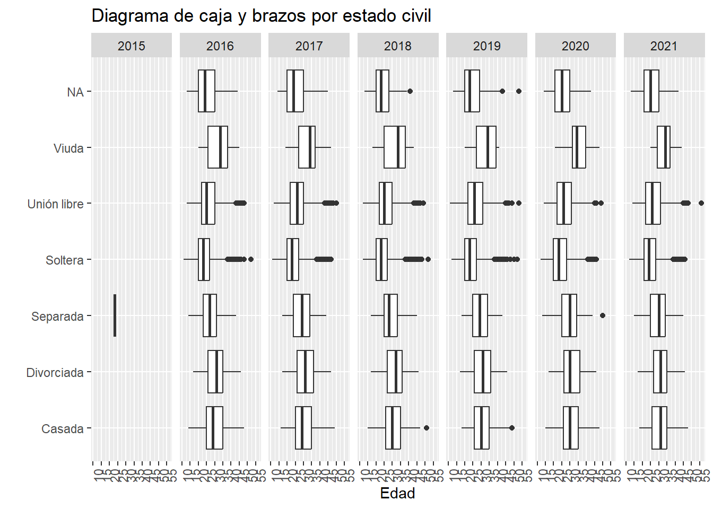

Interrupción Legal del Embarazo en la Ciudad de México
Mini tutorial de como utilizar datos cargados en un google drive en formato csv
code
analysis
visualization
pro-choice
Author
David Humberto Jiménez S.
Published
April 18, 2018
Modified
November 22, 2023
Este post es una actualización y revisión de un post de la primera iteración de este blog.
Datos sobre ILE en la Ciudad de México
El 24 de abril, es decir, el viernes de la semana pasada, en la Ciudad de México se cumplieron 13 años de la despenalización de la Interrupción Legal del Embarazo. Adicionalmente, desde el año pasado la ADIP ha abierto los datos respecto a las interrupciones en la Ciudad de México en clínicas y hospitales de la Secretaría de la Salud de la Ciudad de México.
Por eso, vamos a revisar la base de datos actualizada disponible en el sitio de la ADIP. Para hacer esto, vamos a combinar los datos que están segmentados por periodos: - 2016 a 2018 - 2019 a 2021 - 1er semestre 2022
Por razones de facilidad y replicabilidad, descargué los datos y los subí a una carpeta de google drive
library(dplyr)
Attaching package: 'dplyr'
The following objects are masked from 'package:stats':
filter, lag
The following objects are masked from 'package:base':
intersect, setdiff, setequal, union
En el chunk anterior, los objetos llamados origen son los enlaces a las bases de datos. La función read.csv tiene varios argumentos (como todas las funciones para leer bases de datos): - file es el primero y más importante, y es desde donde se va a leer la base de datos. Puede escribirse directamente. - stringsAsFactors es para que las variables que son texto no se conviertan en factores (un factor es una variable de categorías mutuamente excluyentes). - fileEncoding es para leer bien los acentos y carácteres especiales. UTF-8 y Windows 1252 son los más comunes.
Adicionalmente, porque en un archivo la variable “fecha de primera menstruación” está almacenado como texto mientras que en otro como numérico, no se pueden combinar sin transformar alguno de los data frames. Por eso utilizó la función mutate_all que modifica todas las variables, en este caso para convertirlas en texto (strings).
library(DT)
Warning: package 'DT' was built under R version 4.2.3
datatable(head(datos), rownames = F, class ="display")
Si quieren saber que significan las variables, pueden descargar el diccionario de datos. Un Diccionario de datos es el estándar para explicar los nombres de las variables.
Ahora, los paquetes. Usualmente, los paquetes van al principio del código y van juntos.
library(dplyr)library(ggplot2)library(janitor)
Warning: package 'janitor' was built under R version 4.2.3
Attaching package: 'janitor'
The following objects are masked from 'package:stats':
chisq.test, fisher.test
Vamos a hacer tablas con el conteo por las variables. Como es un ejemplo, trataré de hacer cosas basicas. Esto se hace con el paquete janitor. Además de hacer tablas, el paquete Janitor “limpia” las bases de datos. En este caso, vamos a cambiar los nombres de las variables: la variable Año suele tener
Esta primera tabla muestra el número de procedimientos por año y el porcentaje del total. La función tabyl proviene del paquete janitor.
tabyl(datos, anio, mes)
anio Abril Agosto Diciembre Enero Febrero Julio Junio Marzo Mayo Noviembre
2015 0 0 0 0 0 0 0 0 0 2
2016 3316 3132 2302 2782 2938 3048 3316 2900 3048 3112
2017 2384 3186 2542 3518 2928 2790 2980 3352 3112 2722
2018 2852 2648 1788 3284 2852 2366 2614 3038 2894 1948
2019 1219 1334 941 1419 1271 1210 1218 1285 1480 1232
2020 883 786 803 1462 1373 782 663 1358 636 814
2021 1066 1158 1010 785 797 1021 1154 1063 960 1124
Octubre Septiembre
0 0
3156 3026
3248 2432
2656 2496
1330 1190
888 819
1157 997
En este caso, la tabla no sale tan pulcra. Por esa razón vamos a hacerla con dplyr.
tabla <- datos %>%mutate(cont =1) %>%group_by(anio, mes) %>%summarise(total =sum(cont))
`summarise()` has grouped output by 'anio'. You can override using the
`.groups` argument.
datatable(tabla, rownames = F)
Esta tabla se hizo con dplyr. Este paquete nos permite manipular bases de datos de manera sencilla. Hay que pensar el procesamiento como pasos secuenciales. Es igual que la rutina de la mañana: te despiertas, revisas el teléfono, vas al baño, desayunas, etc.
En este caso, a la base “datos” le aplicaremos distintas operaciones gracias al operador pipe (%>%). Es decir a la base de datos le haremos un mutate(crear una nueva variable) luego ( %>% ) agrupamos las variables año y mes; para finalizar ( %>% ) le hacemos un summarise (colpasamos la base de datos) en ese caso sumaremos la variable cont (que es ponerle un 1 a cada renglón) por año y mes.
Como ya habrán notado, los meses están desordenados.
Esta gráfica muestra el porcentaje por mes y por año. En esta gráfica utilizo lineas para mostrar la distribución de interrupciones por mes para los años disponibles. Esto a través del geom_line en donde cada año tiene un color distinto.
Además, en scale_y_continous defino do parametros: labels, que es como se presentan los números, en este caso como porcentaje; y limits muestra que parte de la gráfica se debe visualizar. En este caso escogi entre el 5% y el 15% para ver los detalles. Mientras que en el caso de scales::, esta es una forma de utilizar una función de un paquete sin tener que poner library. ¿Qué por qué necesitamos esto? A veces cargar un paquete es demasiado para nuestra computadora, piensa que un paquete es como un foco, no prendes un foco de un cuarto en el que no estás.
`summarise()` has grouped output by 'anio'. You can override using the
`.groups` argument.
Quitamos el año en cuestión y volvemos a graficar.En este caso, no filtramos utilizando el mismo objeto debido a que un factor no se puede filtrar.
ggplot(graf2, aes(x = mes, y = porc, group = anio)) +geom_line(aes(color = anio)) +geom_point(aes(color = anio)) +scale_y_continuous(limits =c(0.05, 0.15),labels = scales::percent_format() ) +labs(title ="Porcentaje de procedimientos mensuales en la CDMX",subtitle ="2016 al 2021",x ="", y ="",color ="Año" ) +theme_classic() +theme(axis.text.x =element_text(angle =45, hjust =0.9),legend.position ="bottom" )
En este caso, agregamos nuevos argumentos en theme. axis.text.x es para modificar como vemos las eetiquetas del eje de las x (el eje horizontal). En este caso, lo giré 45° y lo ajusté para que no se sobreponga.
Aunque son cosas sencillas, pueden ser interesantes para pensar y presentar puntos. Y aprovechando que tenemos una base con tantas variables, podemos jugar con los datos y ver que otras cosas aparecen. Por ejemplo:
ggplot(datos, aes(x = estado_civil, y =as.numeric(edad))) +geom_boxplot() +labs(title ="Diagrama de caja y brazos por estado civil",x ="", y ="Edad" ) +scale_y_continuous(breaks =seq(10, 60, by =2)) +coord_flip()
Un diagrama de caja y brazos (boxplot) nos muestra de manera gráfica los cuartiles de una variable. Es decir, los extremos de la caja representan el primer y tercer cuartil. Y la barra dentro de la caja representa el promedio. Mientras que los puntos representan outliers o valores atípicos.
Como ya vimos cambiar la escala del eje es fácil, pero también podemos agregarle más detalle para interpretarla mejor: breaks permite modificar la escala, en este caso utilicé una secuencia (seq) del 10 al 60 de 2 en 2.
Por esta razón, esta gráfica muestra la distribución por edad de acuerdo al estado civil reportado para el procedimiento. Algo que salta a la vista es el hecho de que la mujer más joven sometida a un procedimiento es de 12 años.
Por último, vamos a hacer esta misma gráfica, pero la separaremos por años.
ggplot(datos, aes(x = estado_civil, y =as.numeric(edad))) +geom_boxplot() +labs(title ="Diagrama de caja y brazos por estado civil",x ="", y ="Edad" ) +scale_y_continuous(breaks =seq(10, 60, by =2)) +coord_flip() +facet_grid(anio ~ .)

La función facet_grid puede ser utilizado de manera fija (vertical u horizontal) o ajustarlo dentro de un rectángulo con facet_wrap. Los argumentos son los mismos en ambos casos: (variable1 ~ variable2). Con esto quiero decir que puede separar las gráficas por otras variables. En este caso, vemos los diagramas de caja y brazos por año. Pero así se ve muy feo, probemos otra configuración de los facet
ggplot(datos, aes(x = estado_civil, y =as.numeric(edad))) +geom_boxplot() +labs(title ="Diagrama de caja y brazos por estado civil",x ="", y ="Edad" ) +scale_y_continuous(breaks =seq(10, 60, by =5)) +theme(axis.text.x =element_text(angle =90)) +coord_flip() +facet_grid(cols =vars(as.numeric(anio)))

Aquí le especificamos a R que ponga un número de columnas igual al de nuestra variable de interés (como no la podemos “pasar” directamente utilizamos vars de dplyr).
ggplot(datos, aes(x = nivel_edu, y =as.numeric(numero_hijos))) +geom_boxplot() +scale_y_continuous(breaks =seq(0, 10, by =1)) +labs(title ="Distribución de hijes por nivel educativo",x ="", y ="Número de hijes" ) +coord_flip()
De manera similar, podemos observar el número de hijes por nivel educativo de las pacientes. Hay muchísimos valores atípicos.
Función summary, correlación y diagramas de dispersión
Asimismo, algo que no he mencionada claramente es que después de usar la función mutate_all todas las variables se modificaron, para convertirse en strings (o texto) y esto no siempre es útil al momento de gráficar. Por eso, si observaron, utilicé la función as_numeric dentro de las gráficas: para especificar que se trataba de una variable numérica.
Para hacer más análisis, es conveniente conocer las distribuciones de las variables y su relación entre ellas. Por lo que convertiremos aquellas variables numéricas y exploraremos el contenido de ese conjunto de datos.
head(datos)
anio mes fecha_ingreso referida estado_civil edad institucion_derechohab
1 2016 Abril 2016-04-01 <NA> Soltera 24 Ninguno
2 2016 Abril 2016-04-01 <NA> Soltera 30 Ninguno
3 2016 Abril 2016-04-01 <NA> Casada 38 Ninguno
4 2016 Abril 2016-04-01 <NA> Soltera 23 Ninguno
5 2016 Abril 2016-04-01 <NA> Soltera 18 Ninguno
6 2016 Abril 2016-04-01 <NA> Soltera 18 Ninguno
nivel_edu ocupacion religion
1 Preparatoria Estudiante Ninguna
2 Secundaria Trabajadora del hogar no remunerada Católica
3 Sin acceso a la educacion formal Trabajadora del hogar no remunerada Católica
4 Preparatoria Empleada Ninguna
5 Secundaria Estudiante Ninguna
6 Secundaria Empleada Ninguna
parentesco entidad alcaldia municipio
1 <NA> Ciudad de México Azcapotzalco CDMX
2 <NA> Estado de México Fuera de CDMX Ecatepec de Morelos
3 <NA> Estado de México Fuera de CDMX Ecatepec de Morelos
4 <NA> Estado de México <NA> <NA>
5 <NA> Estado de México <NA> <NA>
6 <NA> Estado de México <NA> <NA>
edad_primera_menstruacion edad_inicio_vida_sexual fecha_ultima_menstruacion
1 12 13 27/01/2016
2 12 17 08/01/2016
3 13 15 15/02/2016
4 10 15 20/02/2016
5 13 15 18/02/2016
6 14 16 01/02/2016
semanas_embarazo numero_hijos numero_embarazos numero_abortos numero_partos
1 1 8 0 0 0
2 3 9 0 1 0
3 7 4 0 5 0
4 2 4 0 0 0
5 1 4 0 0 0
6 2 7 0 1 0
numero_cesareas numero_iles recibio_consejeria uso_anticonceptivo
1 0 <NA> Si Ninguno
2 1 <NA> Si Ninguno
3 1 <NA> Si Ninguno
4 1 <NA> Si Ninguno
5 0 <NA> Si Ninguno
6 0 <NA> Si Ninguno
fecha_primera_valoracion numero_consultas motivos_interrupcion
1 01/04/2016 1 Interrupción voluntaria
2 01/04/2016 1 Interrupción voluntaria
3 01/04/2016 1 Interrupción voluntaria
4 01/04/2016 1 Interrupción voluntaria
5 01/04/2016 1 Interrupción voluntaria
6 01/04/2016 1 Interrupción voluntaria
fecha_ingreso_hosp fecha_egreso_hosp desc_servicio semanas_gestacion_usg
1 <NA> <NA> <NA> 3
2 <NA> <NA> <NA> 6
3 <NA> <NA> <NA> 2
4 <NA> <NA> <NA> 1
5 <NA> <NA> <NA> 0
6 <NA> <NA> <NA> 5
dias_gestacion_usg firma_consentimiento se_complica con_dolor analgesico
1 <NA> <NA> <NA> <NA> <NA>
2 <NA> <NA> <NA> <NA> <NA>
3 <NA> <NA> <NA> <NA> <NA>
4 <NA> <NA> <NA> <NA> <NA>
5 <NA> <NA> <NA> <NA> <NA>
6 <NA> <NA> <NA> <NA> <NA>
anticonceptivo_post fecha_cierre resultado_ile procedimiento_ile
1 Condón 08/04/2016 Completa Medicamento
2 Condón 08/04/2016 Completa Medicamento
3 Condón 08/04/2016 Completa Medicamento
4 Condón 08/04/2016 Completa Medicamento
5 Ninguno 15/04/2016 Otro Medicamento
6 Condón 08/04/2016 Completa Medicamento
Cuando no conocemos el contenido de los datos siempre es útil ver los primeros renglones de un conjunto, y exactamente eso es lo que hace la función head.
Warning: There were 3 warnings in `mutate()`.
The first warning was:
ℹ In argument: `edad_primera_menstruacion =
as.numeric(edad_primera_menstruacion)`.
Caused by warning:
! NAs introduced by coercion
ℹ Run `dplyr::last_dplyr_warnings()` to see the 2 remaining warnings.
summary(datos)
anio mes fecha_ingreso referida
Length:141396 Length:141396 Min. :2016-01-04 Length:141396
Class :character Class :character 1st Qu.:2016-12-16 Class :character
Mode :character Mode :character Median :2017-12-20 Mode :character
Mean :2018-03-31
3rd Qu.:2019-03-14
Max. :2021-12-31
estado_civil edad institucion_derechohab nivel_edu
Length:141396 Min. :11.00 Length:141396 Length:141396
Class :character 1st Qu.:21.00 Class :character Class :character
Mode :character Median :25.00 Mode :character Mode :character
Mean :25.77
3rd Qu.:30.00
Max. :56.00
ocupacion religion parentesco entidad
Length:141396 Length:141396 Length:141396 Length:141396
Class :character Class :character Class :character Class :character
Mode :character Mode :character Mode :character Mode :character
alcaldia municipio edad_primera_menstruacion
Length:141396 Length:141396 Min. : 0.00
Class :character Class :character 1st Qu.: 12.00
Mode :character Mode :character Median : 12.00
Mean : 12.66
3rd Qu.: 14.00
Max. :1218.00
NA's :7263
edad_inicio_vida_sexual fecha_ultima_menstruacion semanas_embarazo
Min. : -1.00 Min. :NA Min. : 0.000
1st Qu.: 15.00 1st Qu.:NA 1st Qu.: 6.000
Median : 17.00 Median :NA Median : 7.000
Mean : 16.96 Mean :NaN Mean : 7.366
3rd Qu.: 18.00 3rd Qu.:NA 3rd Qu.: 9.000
Max. :128.00 Max. :NA Max. :39.000
NA's :7065 NA's :141396 NA's :9182
numero_hijos numero_embarazos numero_abortos numero_partos
Min. : 0.00 Min. : 0.000 Min. : 0.000 Min. : 0.000
1st Qu.: 0.00 1st Qu.: 1.000 1st Qu.: 0.000 1st Qu.: 0.000
Median : 1.00 Median : 2.000 Median : 0.000 Median : 0.000
Mean : 1.03 Mean : 2.341 Mean : 0.175 Mean : 0.699
3rd Qu.: 2.00 3rd Qu.: 3.000 3rd Qu.: 0.000 3rd Qu.: 1.000
Max. :10.00 Max. :47.000 Max. :10.000 Max. :12.000
NA's :18398 NA's :5500 NA's :7909 NA's :7355
numero_cesareas numero_iles recibio_consejeria uso_anticonceptivo
Length:141396 Length:141396 Length:141396 Length:141396
Class :character Class :character Class :character Class :character
Mode :character Mode :character Mode :character Mode :character
fecha_primera_valoracion numero_consultas motivos_interrupcion
Min. :2015-01-13 Min. :0.00 Length:141396
1st Qu.:2016-08-17 1st Qu.:1.00 Class :character
Median :2017-04-27 Median :2.00 Mode :character
Mean :2017-05-08 Mean :1.63
3rd Qu.:2018-01-22 3rd Qu.:2.00
Max. :2022-06-30 Max. :7.00
NA's :72122 NA's :55083
fecha_ingreso_hosp fecha_egreso_hosp desc_servicio semanas_gestacion_usg
Length:141396 Length:141396 Length:141396 Min. : 0.000
Class :character Class :character Class :character 1st Qu.: 5.000
Mode :character Mode :character Mode :character Median : 7.000
Mean : 6.849
3rd Qu.: 8.000
Max. :13.000
NA's :58
dias_gestacion_usg firma_consentimiento se_complica con_dolor
Length:141396 Length:141396 Length:141396 Length:141396
Class :character Class :character Class :character Class :character
Mode :character Mode :character Mode :character Mode :character
analgesico anticonceptivo_post fecha_cierre resultado_ile
Length:141396 Length:141396 Length:141396 Length:141396
Class :character Class :character Class :character Class :character
Mode :character Mode :character Mode :character Mode :character
procedimiento_ile
Length:141396
Class :character
Mode :character
La función summary muestra las medidas de dispersión de las variables numéricas. Estas son: mínimo, primer cuartil, mediana, promedio (media), tercer cuartil y máximo. Para ampliar el análisis y tener mayor precisión, calcularemos la matriz de correlación de las variables numéricas.
data_corr <- datos %>%select_if(is.numeric) %>%cor(use ="complete.obs")data_corr
Esta es una matriz de correlación, la interpretación “estándar” (dependera del análisis y de las fuentes) es que una correlación perfecta tendría que tomar valores de 1 o -1, mientras que valores más cercanos a 0 implican que no existe una correlación. Además, un valor superior a 0.6 indica una fuerte correlación: si tiene signo negativo implica que el aumento de una variable necesariamente reduce la otra; mientras que un signo positivo, indica que el aumento de una variable significa el aumento de la otra.
Sin embargo, esta no es una manera inmediata de entender la relación entre variables.
library(corrplot)
Warning: package 'corrplot' was built under R version 4.2.3
corrplot 0.92 loaded
corrplot(data_corr,type ="upper", order ="hclust",tl.col ="black", tl.srt =45)
Ahora bien, vamos por partes. Este paquete está diseñado para visualizar matrices de correlaciones, por lo cual es muy útil. Necesita, por lo menos, el parámetro corr que es la matriz de correlación. El resto de los parámetros son meramente estéticos: type = “upper” sirve para ver solo la parte superior, order indica como se van a ordenar las correlaciones (jerarquía) y tl.col y tl.srt sirven para determinar el color y la inclinación de las etiquetas. Los parametros de una función pueden consultarse si en la terminal o en el código escribe un signo de interrogación seguido del nombre de la función sin paréntesis: ?corrplot. Esto funciona si el paquete está cargado (library).
Algo que podemos observar es que las correlaciones pueden ser interpretadas fácilmente: número de embarazos con número de parto; semanas de gestación y semanas de embarazo; edad y número de hijos. Todas con una relación positiva, lo que signfica, por ejemplo, que si aumenta la edad aumenta el número de hijos.
Sin embargo, con una correlación negativa está, aunque débil, edad de inicio de vida sexual y el número de embarazos. Lo que se puede interpretar como que personas que inician su vida sexual más tarde tienen un menor número de embarazos.
Para explorar estas relaciones se puede utilizar un diagrama de dispersión (scatter plot).
Con este código podemos visualizar la correlación entre el número de embarazos, eje x, y la edad, eje y, junto con otras dos variables: nivel educativo y número de abortos.
Y con estas herramientas ahora ustedes pueden realizar sus primeros análisis y empezar a jugar con otras bases de datos. Si bien el análisis puede continuar, este ejemplo pretende mostrar algunas operaciones básicas que se pueden hacer a una base de datos. Además, es necesario tener contexto de los datos, ya que sin un conocimiento previo de los datos limitan que tantos problemas podemos imaginar de un conjunto de datos.
Si creen que me falto algo, tienen dudas o quejas, no duden en contactarme para ampliar este post.